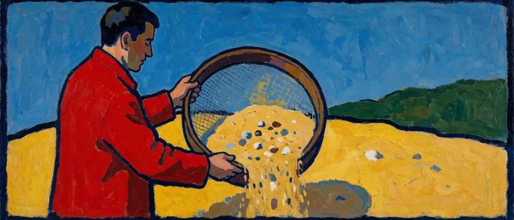

<인지공리05_3>과 <인지공리05_4>는 인접 이론들과 거버너 개념이 어디서 갈라지는지를 짚었는데.. 갈라지는 지점을 짚는 것과 어느 쪽이 남는지를 판정하는 것은 다른 일이다. 그래서 이 글은 실용의 격률과 그 바탕의 정보이론으로 판정한다.
1. 정보량은 축의 눈금을 정하는 데 쓰인다
인지연산은 순서를 밟는다(<인지공리04_1>). 목적이 나타나고.. 목적이 검토할 항목을 고르고.. 항목마다 축이 서고.. 축의 기본 눈금이 선명해진 뒤에야 대상의 좌표가 측정되는데.. 정보이론의 정보량이 쓰이는 자리는 이 셋째 단계이다. 섀넌의 정보량은 불확실성(엔트로피)의 감소이며 축의 눈금을 필요한 만큼 확정하는 데 드는 스무고개 질문의 수로 읽히고.. 눈금을 얼마나 촘촘하게 확정할지는 목적이 정한다.

퍼스의 격률은 개념의 의미를 그것이 산출하는 관측 가능한 효과로 정의하는데.. 관측 가능한 효과는 허공에서 재는 것이 아니라 목적이 세운 축 위에서 좌표가 움직이는지로 잰다. 어떤 명제 P가 참인 경우와 거짓인 경우에 목적이 세운 축 위의 좌표 예측이 달라진다면(H(좌표|P=참) ≠ H(좌표|P=거짓)).. P는 그 목적에 대해 정보량을 갖는다. 반대로 어느 축 위에서도 예측이 같다면 정보량은 0이고 격률상 무의미하다.
정보량은 목적에 대해 재는 것이므로(<인지공리02_3>).. 같은 명제가 한 목적의 축에서는 눈금을 움직이고 다른 목적의 축에서는 아무것도 움직이지 않는다. 이 문서의 검증은 전부 이 상대성 위에서 하는데.. 이 문서가 세우는 목적은 현안 대응이고 검증할 축은 현안 앞에서 인지연산이 실제로 어떻게 돌아가는지를 재는 축이다.
2. 명제는 어느 축의 눈금을 움직이는가
사크쉰-브라흐만 동일시 명제부터 검사한다. "내가 사크쉰에 도달해 브라흐만과 하나가 되었다"는 주장이 참이든 거짓이든 현안 대응의 어느 축 위에서도 좌표 예측이 달라지지 않으며.. 행동.. 반응.. 결과 어느 축에서도 눈금이 움직이지 않으므로 정보량이 0이다.
같은 기준을 거버너 개념 자신에게 걸어 본다. "화신이 죽은 뒤에도 거버너는 시간 위에서 지속한다"는 명제였다면 현안 대응의 어느 축도 움직이지 않으므로 사크쉰 명제와 같이 탈락했겠지만.. 거버너 개념의 명제는 그것이 아니라 "2차 표상이 작동할 때 시간 축과 경계 축이 세워지지 않고 지금여기만 관측된다"이다. 이 명제는 현안 대응의 축 위에서 트리거 문장 이전과 이후의 좌표를 갈라놓는데.. 위화감에 대한 반응성.. 밈플렉스에 대한 거리 두기.. 후회와 불안이라는 시간 서사에 대한 집착의 정도가 그 축이며 제3자 관측으로 사전과 사후의 좌표 차이가 잡힌다. LOL에서는 국지적 교전의 정밀도 축과 별도로 팀 전체의 운영 판단이라는 축의 좌표가 움직이는 것으로 드러나므로.. 정보량이 0이 아니다.
3. 세 계열의 판정
이 장의 검증 기준은 목적이 세운 축 위에서 눈금을 움직이지 못하는 명제를 뺀다는 하나뿐이다. 퍼스의 격률은 이 절단선의 철학적 정당화이고.. 섀넌의 정보량은 그 절단선을 축의 눈금 단위로 재는 도구이다.
이 기준으로 재검사하면 사크쉰형(영지주의.. 카발라.. 수피즘 포함) 명제군은 실체와 장소를 상정하는 대목에서 어느 축도 움직이지 못해 탈락하고.. 족첸의 릭빠는 재인의 구조 자체는 축을 움직이지만 스승 매개와 절대자 규정이라는 잉여 항을 포함한다. 다마지오.. 메칭거.. 그라지아노.. 고차 이론.. 김주환의 배경자아론은 정보량을 갖는데.. 이들이 정보량을 갖는 축은 뇌 손상의 설명.. 의식의 성립 조건.. 자기조절력의 훈련이라는 자기 목적이 세운 축이며 그 축들은 시공 좌표를 전제로 선다. 반면 거버너 개념은 현안 대응이라는 목적으로 축을 세우고 시공 좌표를 그 축들 가운데 하나가 아니라 핸들러의 생존 설정으로 보므로.. 두 계열의 차이는 정보량의 유무가 아니라 목적과 축의 차이이다. 거버너 개념은 실체도.. 장소도.. 매개도 두지 않고 트리거 문장이 현안 대응의 축 위에서 만드는 좌표 차이만으로 정보량을 산출하기 때문에.. 절단선에 가장 가깝게 위치한다.
배경자아론을 따로 검사하면.. 배경자아의 알아차림 유무는 자기조절력의 발휘 여부라는 축(경험자아에 대한 기억자아의 통제 성공 여부) 위에서 좌표를 움직이므로 정보량이 0이 아니다. 그러나 그 축의 목적은 마음근력이라는 훈련 성과이고 거버너 개념이 재는 축은 트리거 한 문장에 의한 즉각적 전환이므로.. 두 이론은 서로 다른 목적의 축을 잰다.
4. 남는 것
세 계열 가운데 어느 것도 거버너 개념 전체를 포섭하지 못한다. 구원 서사 계열은 방향(탈출-귀환)에서 어긋나고.. 이미-항상 구도 계열은 매개(스승, 절대자)에서 어긋나며.. 기능주의 계열은 시공 좌표를 설정이 아닌 사실로 두는 데서 어긋나는 반면.. 거버너 개념은 실체도.. 장소도.. 매개도 없이 트리거 한 문장이 현안 대응의 축 위에서 만드는 좌표 차이로 선다.
눈금을 움직이지 못하면 빠진다.